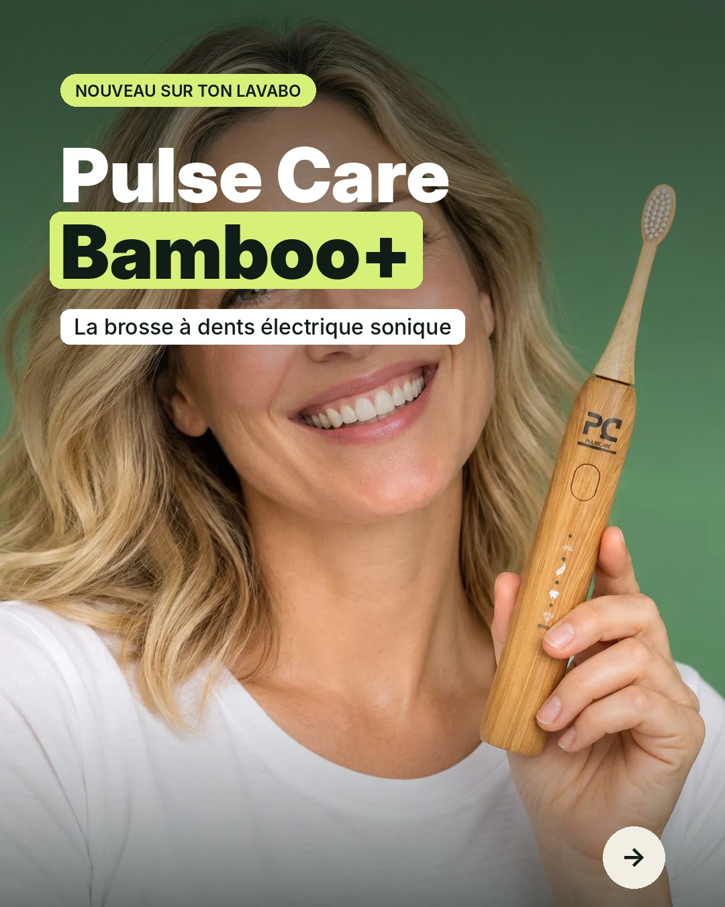
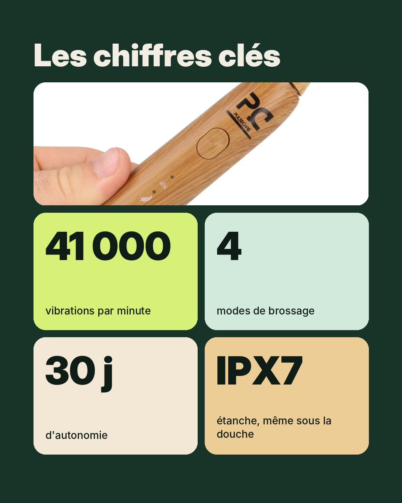
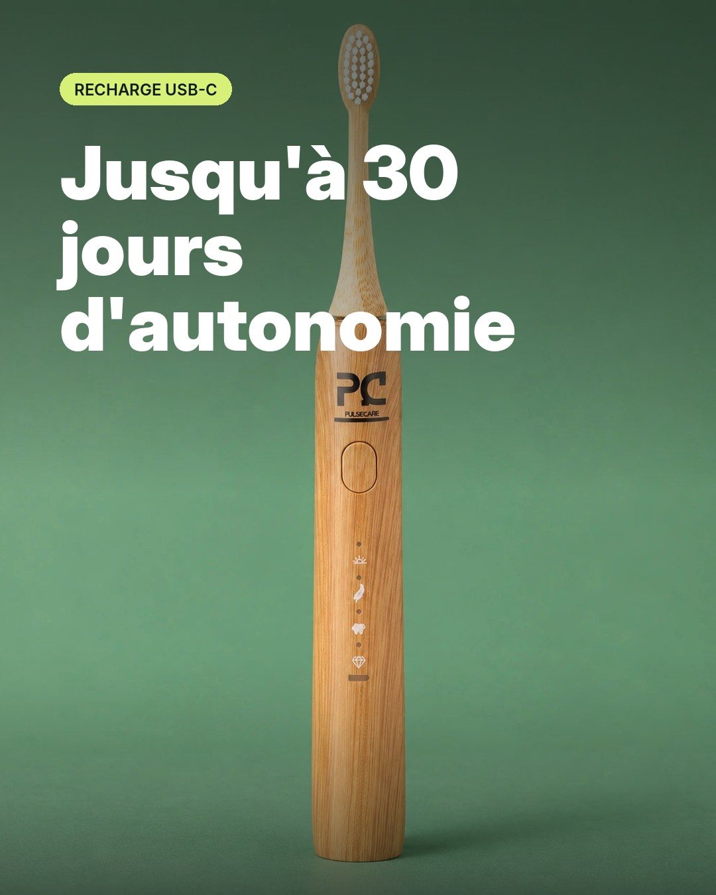
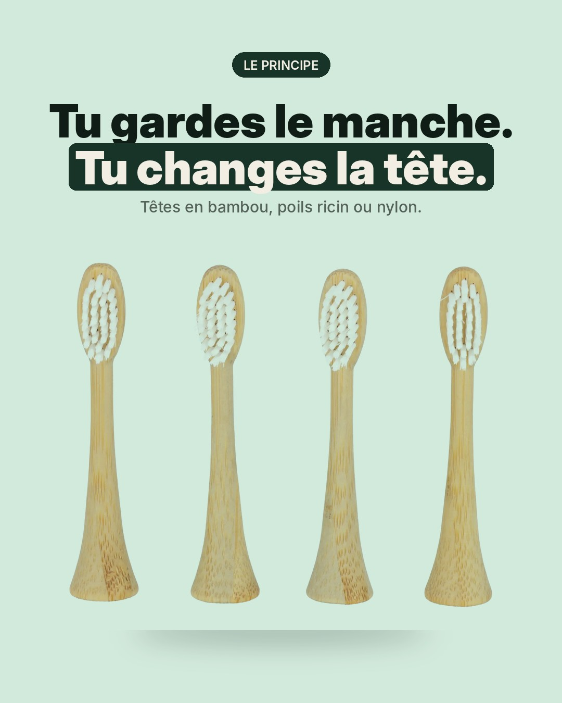

Légende
Brosse à dents électrique Pulse Care Bamboo+ : on te la présente. Le principe est simple. Tu gardes le manche. Tu changes seulement la tête, en bambou. → 41 000 vibrations par minute (technologie sonique) → 4 modes : Sensible, Nettoyage, Blanchiment, Polissage → Jusqu'à 30 jours d'autonomie, recharge USB-C → Étanche IPX7 Swipe pour tout voir. Lien en bio pour voir la gamme Pulse Care. #brosseadentselectrique #brosseadentsbambou #hygienebuccodentaire #pulsecare